12 different valve solutions for safe control of fire suppression systems. UL Listed / FM Approved products, diameter range DN 15–DN 300.
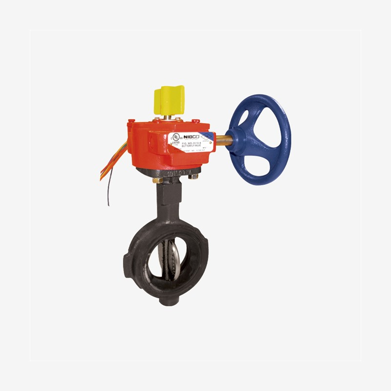
Tamper switch integrated butterfly valve that transmits open/closed valve position to the fire alarm panel via dry contact. Wafer, grooved and threaded connection types. UL / FM / ULc approved, diameter 1″–12″, max. 300 PSI.
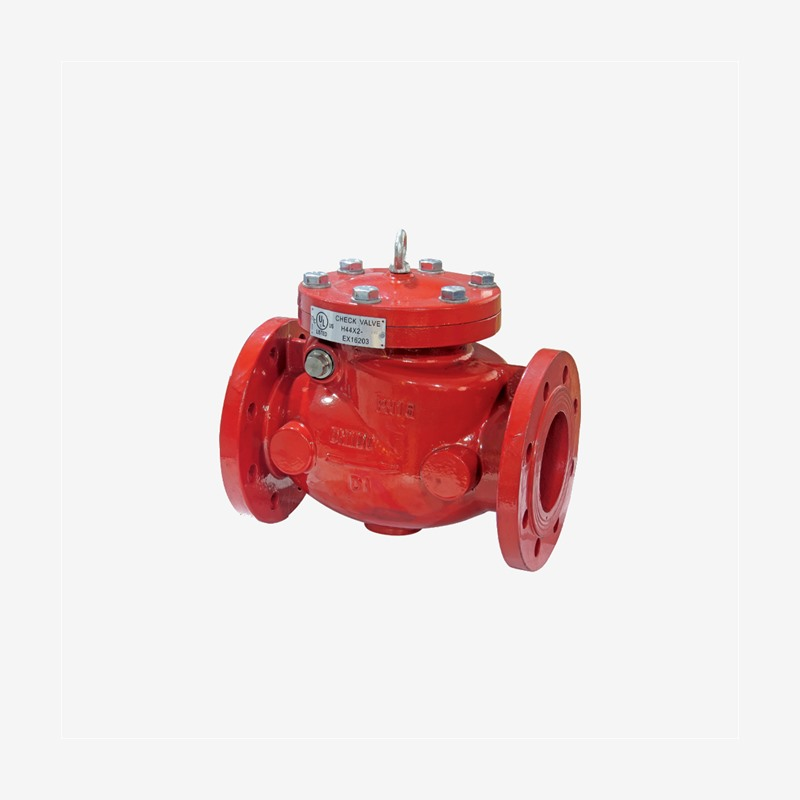
Horizontal and vertical mounted check valves that ensure one-way flow and prevent backflow.
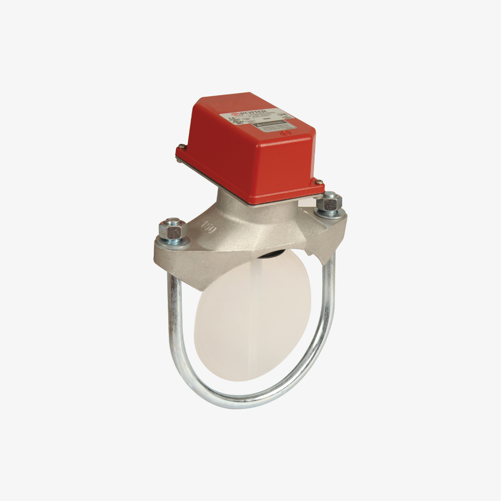
Paddle-type flow switch that detects water flow in the pipe and generates an alarm signal.
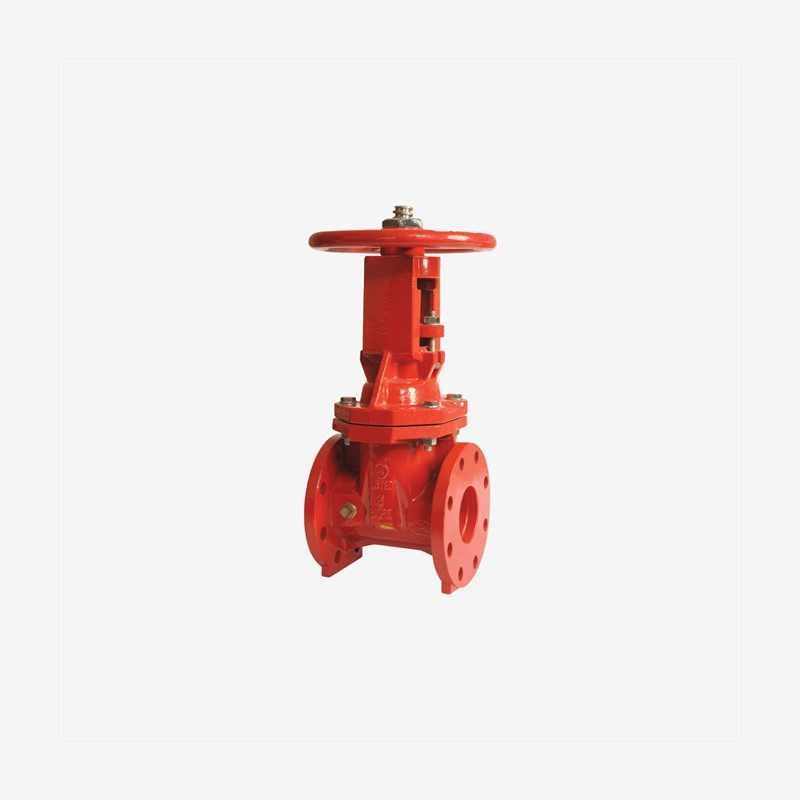
OS&Y gate valve system that enables visual position monitoring with the stem rising outward.
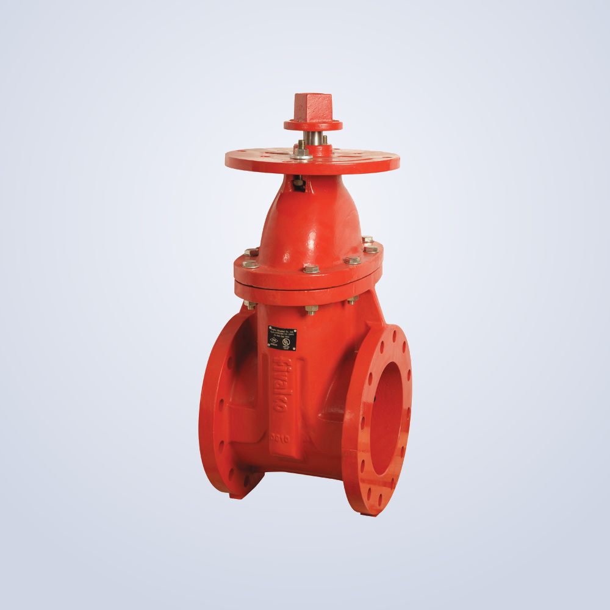
Compact-designed gate valve without external rising stem, suitable for tight spaces and underground applications.
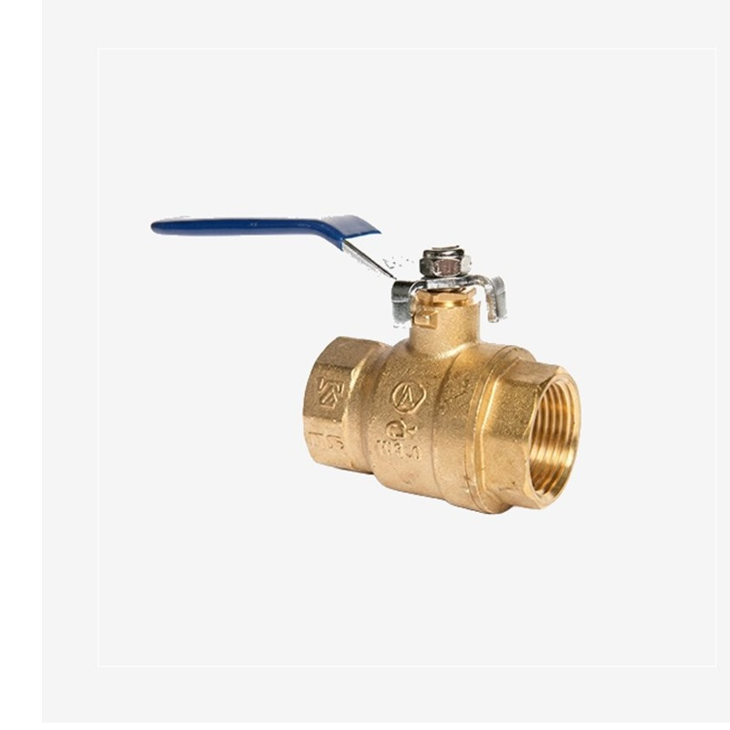
Quarter-turn ball valve solutions with leak-proof PTFE seat for quick open/close operation.
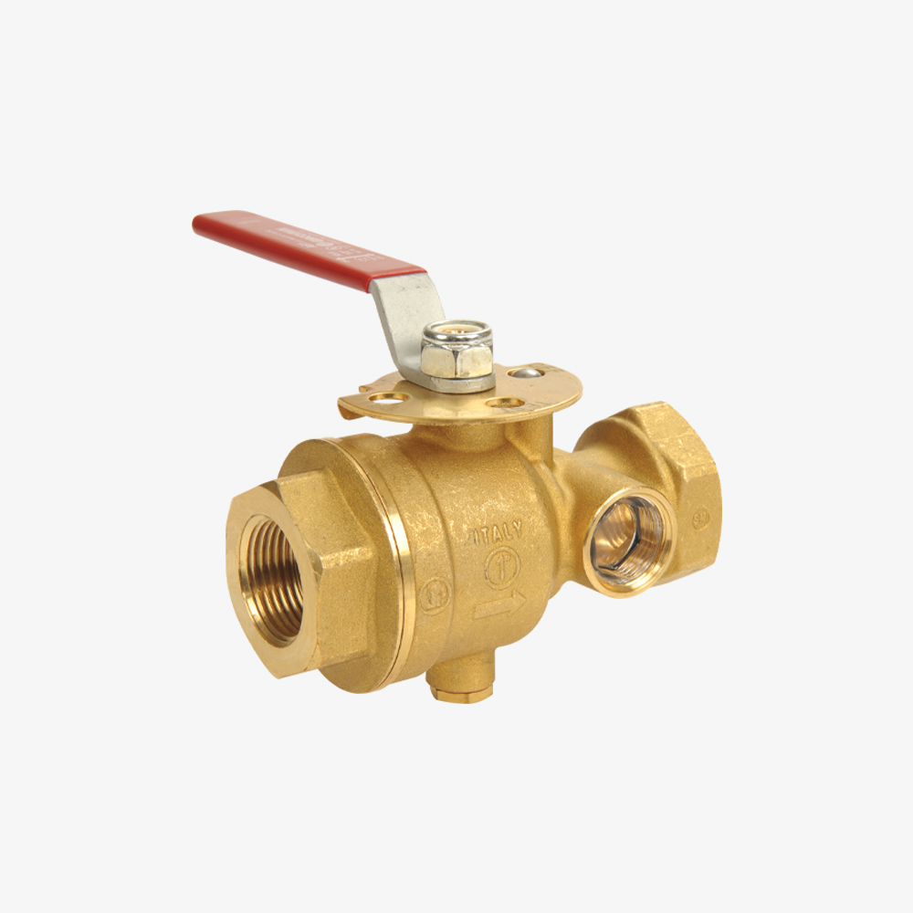
Combined valve that facilitates periodic testing and draining of sprinkler systems.
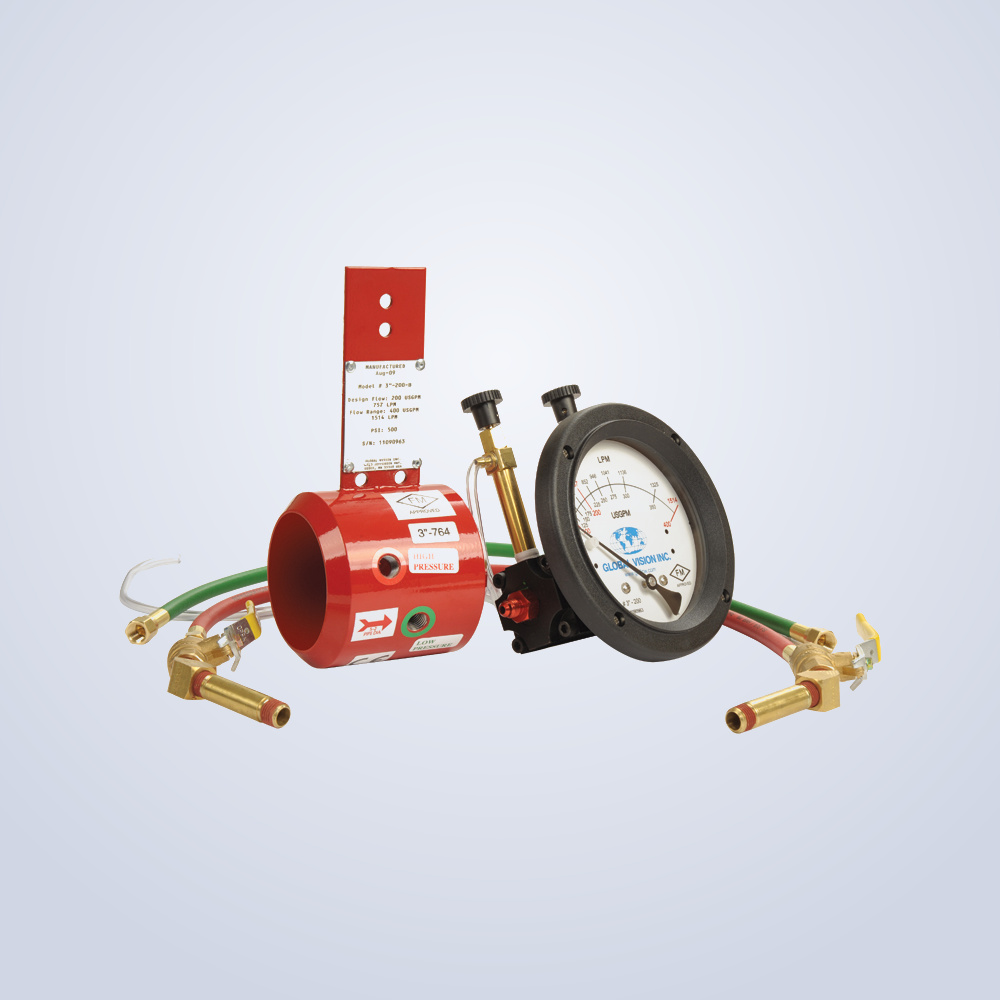
Device that accurately measures in-pipe flow rate during system performance and maintenance tests.
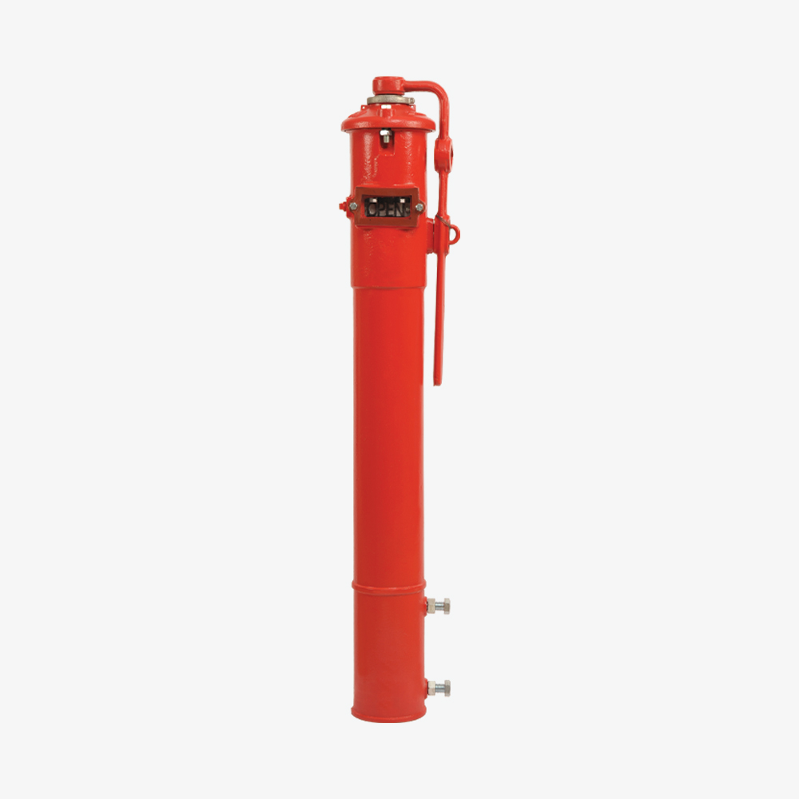
Post indicator that visually shows the open/closed status of underground valves from the surface.
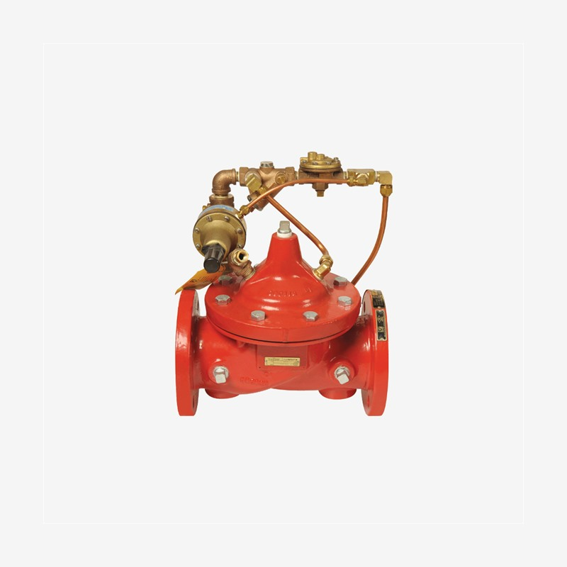
Valve that limits system pressure to a set value and provides protection against excessive pressure.
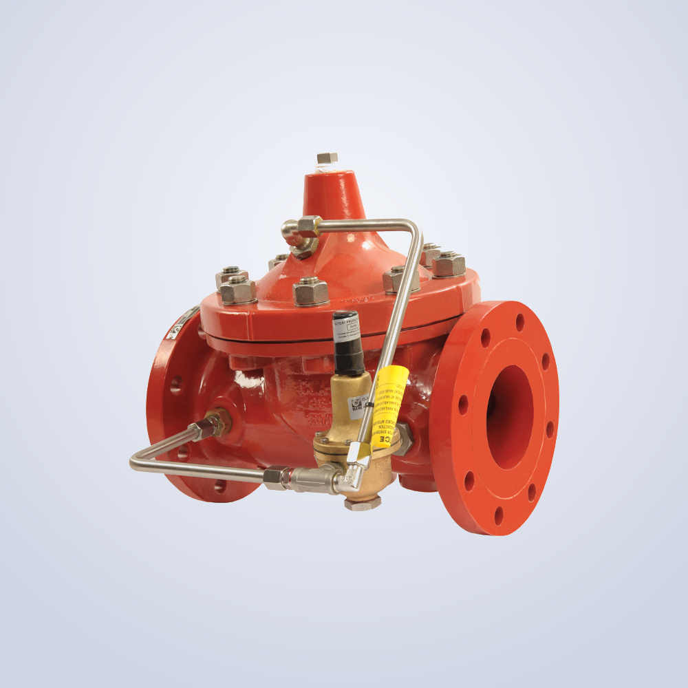
Differential pressure valve reducing high inlet pressure to a stable and adjustable outlet pressure. Protects sprinkler and hydrant systems in high-rise buildings.
Threaded connection type, paddle sensor flow switch. Detects water flow in sprinkler system and initiates fire alarm by sending signal to alarm panel. UL 346 / FM 1144 approved.
Determine the right solution from among 12 different valve options for your project with our technical team. UL Listed / FM Approved products, wide diameter range.